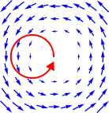
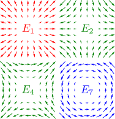
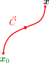
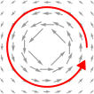
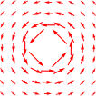
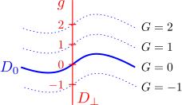

15.1偏微分は可換である
第7章の【7.3-注1】で、偏微分が可換だと述べたが、証明していなかった。この節でその証明を行う。
定理
多変数関数
の偏微分は可換である（＝微分の順序を交換できる）：
ただし、
は2階全微分可能であるとする。
のように略記している。
証明
まず、
は全微分可能（＝1次近似可能）なので、1次近似する：（右辺は
における値）
と
が同じ方向を向けば赤字部分の内積は正の値となるので、
は、
が大きくなる方向を向くことが分かる（
の場合）。
さらに、
は2階全微分可能なので、ベクトル場
も同様に1次近似できる：
ここでは3次元を想定しているが、以降の議論は自然に一般化できる。緑字部分を、
のヘッセ行列という。式()が成立していることを言うには
ヘッセ行列が対称行列になる
を言えばよい。
ヘッセ行列()は
成分の行列なのだから、
個の基底行列
の線形和
で書ける。そのような
の取り方には任意性があるが、ここでは以下の【15.1-注1】のように、発散成分や回転成分に分けることを考える。

さて、背理法で定理を示す。式()が成立していないと仮定すると、ヘッセ行列は反対称成分を持つ。即ち、【15.1-注1】の反対称行列
のいずれかの係数が
ではなくなり、同注の青図（右に再掲）で示したような回転状のベクトル場が含まれることになる。しかし、上述のように、
の方向に進むと
の値が大きくなるのだから、ベクトル場の回転に沿って1周して戻ってくると、
の値が元の値より大きくなってしまう（右図の赤線）。同じ点では同じ値に戻らなければならないので、これは、矛盾である。反対称性分以外の項と打ち消しあって、元の値に戻る可能性はない。実際、対称部分の寄与は、中心点回りに1周する経路を考えるとゼロになることからもわかるように、任意の経路で打ち消すことはできない。また、1次近似による誤差も、小さな経路を考えれば相対的に無視できるようになる。
【15.1-注1】1次ベクトル場の分解
3次の正方行列の基底
として以下のようなものが取れる：
ただし、
は単位行列、
はトレースレス対称行列の基底、
は反対称行列の基底となるようにとっている（以下の【15.1-注2】に合わせた）。

1つの
だけで作る1次ベクトル場
を右図に示す。同図より、
は原点を中心とする放射状のベクトル場、
は
軸に集まってくるようなベクトル場、
は
を45度回転したもの、
は同心円状に渦巻くようなベクトル場となることが分かる。→方向が
軸、↑方向が
軸である。図に無いものも、軸を取り換えればこれらに一致する。
補足
上記の
が基底になっていること、即ち、任意の行列がこれらの線形結合
で書けることは、1つの成分だけが
でそれ以外が
の行列が作れることから分かる。例えば、
成分だけが
の行列は、
となる。
任意の1次ベクトル場は、上図のようなベクトル場の重ね合わせになるわけだが、同図から連想されるように、
の係数（＝スカラー行列部分）が値を持つ場合、発散を持つという。同様に、
の係数（＝反対称行列部分）が値を持つ場合は、回転を持つという。任意のベクトル場の場合にも、1次近似を考えることで、各点で発散・回転を定義できる。
【15.1-注2】行列の分解
任意の正方行列
は、スカラー行列
、トレースレス対称行列
、反対称行列
の和として、スカラー行列とは単位行列に実数（や複素数）をかけたもの、トレースレス行列とはトレース
（＝対角成分の和）が
になる行列である。以下のように一意的に分解できる：（
は行列の次元）
証明の概略
式(-)⇒式()は、実際に代入すれば明らかなので、分解が存在することは言えている。後は、一意性、即ち、式()⇒式(-)を示せばよい。まず、式()の両辺のトレースを取ると、
は式()以外にあり得ないことが分かる。次に、
を考えると、反対称部分は消えて式()が得られる。最後に、
を考えると、式()に一致する。
15.2ベクトル場の可積分条件
ベクトル場
が、ある関数
の微分で書けるとする：
この時、
は可積分であるといい、
のことをポテンシャルという。なぜ積分という言葉が含まれているかというと、以下の証明中の式()のように、ポテンシャル
は、ベクトル場
を積分することで得られるからである
この節では、ポテンシャルが存在するための必要十分条件()を示す（第8章の【8.2-注2】の補足で結果だけ示していた）。
定理：ポアンカレの補題（の特別な場合）
ベクトル場
がポテンシャル
を持つための必要十分条件は、全ての点で全微分が対称行列になること（＝回転()がゼロ）になることである：
ただし、
は全ての点で全微分可能（＝1次近似可能）とする。この定理をポアンカレの補題という（実際にはもっと一般的な定理であり、電磁力学編の第14章で扱う）。式()をベクトル場の可積分条件という。なお、式()を成分ごとに書けば、以下のように表すこともできる：
全てのに対して
証明
まず
ポテンシャルが存在可積分条件が成立
は容易に示せる。実際、
の定義式()を可積分条件()に代入すれば、偏微分の可換性の式()そのものになるので確かに成り立つ。よって後は、この逆
可積分条件が成立ポテンシャルが存在
を示せばよい。そのために、ポテンシャル
を実際に構成することを考える。
式()より、
の1次近似：

を使えばよい。これを使って、適当な固定点
から経路
に沿って
ずつ進めていくことで、
が計算できる（右図）。積分の形で書けば以下のようになる：（以下の【15.2-注1】の式()）
経路
は、始点
と終点
を結ぶ曲線である。
に定数を足しても式()に影響しないので、この自由度を使って、
とする。
ところで、
は、始点・終点しか固定されておらず、途中の経路の取り方に任意性がある。そのため、
が一意的に決まるには
式のは、積分経路に依存しない
という条件が必要である。これが成り立てば、
が一意的に決まるだけでなく、ポテンシャルの定義式
も成り立つ。実際、微小量
に対する
の変化は、「2点
を結ぶ直線経路」
に沿った積分で得られるので（経路は任意なのでこのようにとってよい）
は（全微分可能）連続関数なので、上での変化は十分小さい。即ち、この積分は次近似できる。
よって、命題()を示せばよい。実際に
を計算するには、
上の各点
にパラメータ
を入れて
としたうえで、式()を数直線上の積分に引き戻せばよい：（以下の【15.2-注1】の式()）
この式において、始点・終点はそのままで
をわずかに変形させた経路を
と書くことにする（上の
と同じ記号だが意味が違うので注意）。
上の点を
と書くことにする。すると、可積分条件()が成り立つ場合、
は
の値を変化させないことが以下のように言える（
を変えた時の変化に注目しているので、
の代わりに
と書いている）：
次近似：を代入した後、微小量の次と次の項のみ残す。次次を含む項をで表したもの：を代入してを括りだす。積分の境界ではなので、青字部分は積分すると消える。
の1次近似の範囲で
が変化しないのだから、微小変形を繰り返し適用することにより、有限の変形でも値を変えないことが分かる。
は
の関数なので、これまでの1次近似とは少し違う。分かりにくければ、
のように微小部分を定数
の形で括り出せばよい。そうすれば、
に対する1次近似の範囲で値が変わらないことになる。よって、始点・終点だけで値が決まる、即ち、命題()は真である。
【15.2-注1】ベクトル場の積分：式()
全微分可能な関数
について、微小間隔
だけ離れた2点間の値の差
は、1次近似で表せる：（最右辺は
での値）
これに区分求積法を適用すれば、大きく離れた2点
の場合に拡張することができる。実際、まず、
を始点とし
を終点とするような経路
をとる。
を微小要素
からなる折れ線に分割し、各要素に式()を適用して足し上げた後、分割を小さくする極限（
と書く）：
をとればよい
この積分は、
を任意のベクトル場
に置き換えて定義することもできる：
これを、経路
に沿った
の積分という。実際に式()を計算するには、前章と同様に、数直線上の積分へ引き戻してやればよい。即ち、経路
上の点をパラメータ
を使って
と表すことにして、以下のように書ける：（
が始点、
が終点）
（以下の【15.2-注2】に例題を示す。）
補足
- 式()の導出は、区分求積法に立ち返って考えればよい：
- 前章で扱った密度の積分と異なり、式()の積分には方向があり、始点と終点を入れ替えて向きを反転すると符号も反転する。
のように矢印を付けて表記しているのは、単なる曲線ではなく、このように向きを持っているからである。これは微分形式の積分と呼ばれるものの一種であり、前章で扱った経路によらない密度積分とは微妙に異なるものである。なお、「微分形式」というのはそれ自体で1つの用語であり、「微分」の「形式」という意味ではない。
【15.2-注2】ベクトル場の積分の例題

積分()の例として、 右図のように、2次元平面上のベクトル場：（以下の【15.2-注3】から前借り）
を
「半径
の円に沿った反時計回りの経路」で積分したもの
は
となる。
導出
積分経路
に極座標：
を設定して引き戻すのが自然である。式()より
（参考）領域に穴がある場合、ポテンシャル は多価関数になり得る
上記の証明では、2つの積分経路が連続的に移り合えること（ホモトピックであるという）が重要であった。これが成り立たない例として、2次元平面において「可積分条件を満たさない領域
」がある場合、を考えてみよう。この場合、
を「時計回りに迂回する経路
」と「反時計回りに迂回する経路
」は、連続的に移り合うことはできないので、領域全体に関してポテンシャル
が存在するとは言えなくなる。
このような
が存在する典型例が、極座標
の角度
を微分して得られるベクトル場
である。
は、以下の【15.2-注3】の式()のようになり、原点では定義されていない（それ以外では可積分条件()を満たす）。このため、原点を囲むように2つの経路を取ると、
の積分（＝
）の値は一致しない可能性がある。実際、よく知られているように、
の整数倍だけずれる。このような関数を多価関数（＝複数の値をとる関数）という。一方、原点を囲まないように移動する分には、
は一意的に決まる。3次元の場合も、極座標の方位角
を微分して得られるベクトル場が、
軸上で定義されない。実際、
は多価関数であり、
軸周りに1周すると
ずれる。
【15.2-注3】角度の微分

2次元極座標の角度
を、デカルト座標
で微分して得られるベクトル場
は
である（右図）。
は、原点では定義されず、それ以外では可積分条件()を満たす。
導出
デカルト座標
と極座標
の関係式
を使って微分を計算するだけである。実際、
は以下のようになる（以下の【15.2-注4】の式()を使う）：
これにより、
は
となる。最右辺を
で表すと、式()に一致する。
また、原点以外で可積分条件を満たすこと、即ち
が対称行列となることは（
の存在が分かっているので計算するまでもないが、計算例として）
積の微分公式：対称行列
より分かる。
なお、式()の分母を払ったもの
：
を考えると、明らかに、可積分条件()を破る。よって、
となるような
は存在しない。このように、関数をかけるだけでも可積分性が変化する。
【15.2-注4】微分公式
- 【逆関数の微分】任意の2つの座標系
に対し、
がともに全微分可能である時、以下が成り立つ：
- 【積の微分】関数
とベクトル値関数
の積
の微分は、各々の微分を用いて書ける：
証明
式()
は以下の1次近似で定義される：
第2式を第1式に代入して
を消去すれば、
、即ち、式()が得られる。
式()
の1次近似を考えればよい：（引数を明示していないものは
での値）
を代入して、の次の項を落とすを括り出す
微分の定義により、
部分が
である。
15.3微分形の拘束条件の可積分条件
この節では、第13章で述べた、速度に対する拘束条件について、可積分性であるための条件()を示す。まず、可積分性の定義から始めよう。
拘束条件の可積分性
運動する点
に対して、その運動方向
に、以下のような拘束条件が課されているとする：（
は行列）
この式が、「あるベクトル値関数
が一定」という形：
で書ける時、拘束条件()は可積分（またはホロノミック）であるという。式()の全微分
を考えれば、式()と同じ形になる：
ただし、式()と式()の左辺同士が一致する必要はない。実際、式()の両辺に、可逆な行列
を左乗したものも同じ拘束条件を与えるので、可積分であるためには
を満たす
のペアが存在すればよい。この
（積分因子という）も考慮する必要があるため、式()の可積分性の判定は、前節のベクトル場の可積分性()に比べて難しい。
可積分な拘束条件の例を以下の【15.3-注1】に、非可積分な例を【15.3-注2】に示す。
【15.3-注1】可積分な拘束条件の例
拘束条件()が可積分になる例：
右図の青い面が、運動可能な方向、即ち、拘束条件
を満たす
が張る面であり、それらがうまく繋がって曲面を構成している。この曲面が
になる。
例えば
として、
と取ることができる。実際、
を考えると
となり、拘束条件
と一致する。
【15.3-注2】非可積分な拘束条件の例
拘束条件()が非可積分になる例：
右図を見ると、運動可能な面を繋いでいっても、1つの面にはならない。
このため、運動の自由度が2、即ち、2方向にしか動けないにもかかわらず、3次元空間の任意の点に移動することができる。例えば、
軸上の任意の位置に移動できることは次のように分かる。同図より、原点から始めて、
軸方向に進み、
軸の周りを反時計回りに移動すると
座標が大きくなる。その後、
の値を保ったまま、まっすぐ
軸上に戻ることができる。この性質を
の形で表すことは、もちろんできない。
補足
非可積分な拘束の身近な例は、自動車の運動である。実際、自動車には真横への平行移動が（直接は）できないという拘束があるにもかかわらず、切り返しによって任意の配置を実現できる。この場合も、運動の自由度2（「向いている方向への運動」と「向きの変更」）よりも、到達可能な配置の自由度3（位置2自由度と向き1自由度）のほうが大きくなっている。
このように、非可積分な拘束があると、「運動の自由度」よりも「到達可能な配置の自由度」のほうが大きくなる。
フロベニウスの定理
拘束条件()：（再掲）
が可積分（
と表現可能）であるための必要十分条件は、全ての点で
が成り立つことである。
は、全ての点において、1次近似可能、かつ、行フルランク（＝
が1次独立）であるとする。ただし、
は領域全体では定義できないことがある。例えば、ドーナツの表面
上の運動を考えると、ある点から移動可能な領域は曲線になるが、その曲線が閉曲線でない場合、1本の曲線が
全体を覆ってしまい、非ホロノミックのような状態になる可能性がある。そのような拘束条件を1つの
で表すことはできない。
補足
4点ほど補足しておく。
1式()は、ベクトル場の可積分条件()の両端に行列
をかけたものとなっているので、条件としては弱くなっている。実際、拘束面に限定した時のベクトル場の回転がゼロになればよいことを意味している。（これを満たさない最も単純な例が【15.3-注2】である。）【導出】
は「拘束条件を満たす
が張る空間（
）への正射影行列」である。式()に拘束条件()を満たす任意の
を右からかけると
となる。赤字部分は
だけ進んだ点でのベクトル場の回転の寄与（の
倍）なので、これを拘束面に射影したものがゼロになることを示している。
2行列
を使わない方法として、
の基底ベクトルを行に持つ行列
を用いて、可積分条件()を
と書くこともできる。【導出】可逆な行列
を定義し、式()の右から
を、左から
をかければよい。
により、
だけが残る。
3フロベニウスの定理の特別な場合として、1方向にのみ移動できる場合、即ち、
次元空間に
個の拘束条件がある場合は、常に可積分となる。【導出】
は1行だけになるので、式()は、反対称行列の性質によって常に成立する。
4 また別の場合として、3次元空間中に1つだけ拘束条件がある場合、拘束条件を
と書くことにすると、可積分条件()は：
となる（式(), ()に使える）。【導出】可積分条件の左辺は、反対称行列であり、かつ、
を左乗すると
。このような性質を持つのは、
の形の式のみである。よって。可積分条件は
。この
を求めるには、可積分条件に左右から
をかけて
を消した後
を代入すればよい。後は縮約公式（第10章の【10.2-注2】）を使ってクロス積を消せば
が求まる。
フロベニウスの定理の証明
基準点
を任意にとる。「
を起点として拘束条件()を満たしながら到達可能な領域」を
とおく。
上に経路
を取った時、
が拘束条件を満たすかに注目する。例えば、非可積分な拘束の例()では、拘束を破らずにどこにでも移動できるので、
は空間全体となる。よって例えば、
として
軸上の線分を取ることができる。しかし、（
軸上の点は
平面方向にしか動けないので）この
に沿った移動は拘束条件を満たさない。一方、可積分な拘束の例()では、
はある曲面となり、任意の
は拘束条件を満たす。この例からも分かるように、非可積分の場合のみ、拘束条件を満たさない
が存在すると予想できる。
まず
可積分可積分条件が成立
を示す。可積分な拘束条件は、
と書けるので、
は、
を満たす
の集合であり、その上を自由に動けるのだから、
上の任意の経路
は拘束条件を満たす。これが成り立つために必要な条件が、可積分条件()であることを言えばよい。
上にパラメータ
を入れると、各点
において、拘束条件()が成り立つ：
この
に対し、微小な変化
を考え、その上の点を
とする。ただし、
は、拘束条件()を満たすようにとると、
に対しても式()が成立する。これを式で表すと：（右辺は
での値）
積の微分公式を変形したもの：を括り出す
式()は、拘束条件を満たす任意の
で成り立たなければならないので、可積分条件()（＝式()）が得られる。よって、命題()が成り立つ。
後はこの逆：
可積分条件が成立可積分
を示せばよい。可積分条件()が成立すれば、式()が成り立つので、
上の経路
を拘束条件に沿って変形したものは常に拘束条件を満たし続ける。即ち、
に接する全てのベクトルは拘束条件を満たす。これは、
の次元が、自由度
（＝
空間の次元拘束条件の数
）に等しいことを意味している。

ここから、拘束条件
を与えるようなベクトル関数
を作ることができる。そのためにまず、「適当に決めた点を通り、拘束面の層を貫くような
次元空間
」をとり、
に座標
を入れる（
）。後は、
を以下のように定義すればよい（右図）：
は、を通る拘束面ととの交点
これは確かに、拘束面上で同じ値をとり、異なる拘束面では異なる値をとる。例えば、3次元空間中において、全ての
が
平面と交差する場合、
は
平面とし、
とすればよい。よって、可積分である。